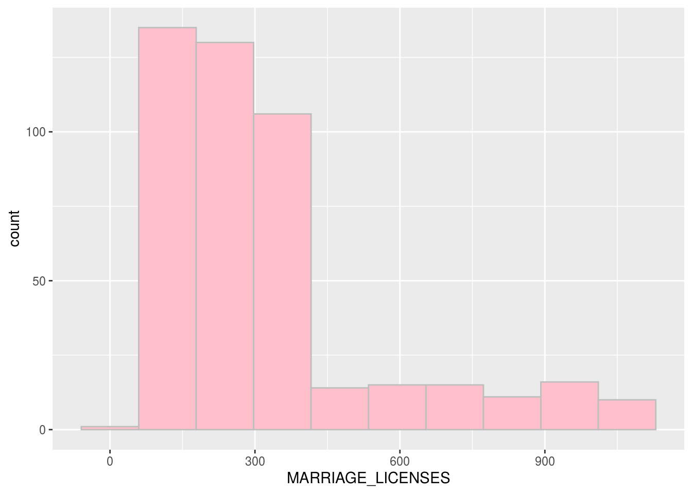

Abstract
There are thousands of couples are getting married each day in the world. We are curious about how many marriage licenses are issued daily in Toronto. This paper, we explore the number of marriage licences which are issued each week with the collected data from the January of 2011 to the August of 2020. In our table, the data is collected every week of the month. The data provider divides one month into four weeks. Thus, we have four collected data for one month. Through table and graph, we find that 1117 is the highest number of marriage licenses issued in one week whereas 47 is the lowest number of marriage licenses issued in one week.
Introduction
Marriage is one of the significant incidents happened for everyone. People are suggested to choose their future husband/wife cautiously and wisely. Marriage is one of many traditions that is kept from the ancient times. Although divorce rate starts to become a popular topic nowadays, marriage rate is still high relative to divorce rate. We often talk about marriage rate, but we know little about how many couples get married each week specifically. The curiosity to take a look into the number of marriage licenses are issued lead me to analyze this datatset.
We compare the number of marriage is licensed each week to learn about which week of the year has the most marriage licence issued. We extract, summarize the datatset. We made a histogram of the frequency of number of marriage licences are issued in a week. We analyze the graph and make several conclusion.
This paper, we are going to discuss the data as well as the graph. In terms of data, we will describe the marriage licenses in Toronto with numerical data. After we make a graph, we will analyze the data with graph’s skewness and graph information. At the end, we will discuss the weakness of this analysis and what we can make up for.
summary(cars)
## speed dist
## Min. : 4.0 Min. : 2.00
## 1st Qu.:12.0 1st Qu.: 26.00
## Median :15.0 Median : 36.00
## Mean :15.4 Mean : 42.98
## 3rd Qu.:19.0 3rd Qu.: 56.00
## Max. :25.0 Max. :120.00
fit <- lm(dist ~ speed, data = cars)
fit
##
## Call:
## lm(formula = dist ~ speed, data = cars)
##
## Coefficients:
## (Intercept) speed
## -17.579 3.932#Data Discussion
The data is provided and published by City Clerk’s Office.
The data set is consisted with four variables: _id as in identifier number; CIVIC_CENTRE as in code of civic center; MARRIAGE_LICENSES as in Number of marriage licenses; TIME_PERIOD as in Month marriage registered. This data set has two integer variables and two string variables. Number of Marriage Licenses and identifier number is integer variables whereas Time period and Civic center are string variables.
In this data set, there are a total of 453 observations provided. The time period starts from the January of 2011 to the August of 2020. The lowest number of marriage licences which are issued is 47 in a week whereas the highest number of marriage licences which are issued is 1117. According to the data set, there are 47 marriage licences issued on the first week of 2020 April. There are 1117 marriage licences issued on the last week of 2018 August. On average, there are 322.9 marriage licences issued in this data set. The middle value of marriage licences issued is 247.
Marriage_packages <- search_packages("Marriage Licence Statistics")
Marriage_resources <- Marriage_packages %>% list_package_resources()
Marriage_statistics <- Marriage_resources %>% get_resource()
summary(Marriage_statistics)
## _id CIVIC_CENTRE MARRIAGE_LICENSES TIME_PERIOD
## Min. :5612 Length:453 Min. : 47.0 Length:453
## 1st Qu.:5725 Class :character 1st Qu.: 168.0 Class :character
## Median :5838 Mode :character Median : 247.0 Mode :character
## Mean :5838 Mean : 322.9
## 3rd Qu.:5951 3rd Qu.: 364.0
## Max. :6064 Max. :1117.0
glimpse(Marriage_statistics)
## Rows: 453
## Columns: 4
## $ `_id` <int> 5612, 5613, 5614, 5615, 5616, 5617, 5618, 5619, 562…
## $ CIVIC_CENTRE <chr> "ET", "NY", "SC", "TO", "ET", "NY", "SC", "TO", "ET…
## $ MARRIAGE_LICENSES <int> 80, 136, 159, 367, 109, 150, 154, 383, 177, 231, 21…
## $ TIME_PERIOD <chr> "2011-01", "2011-01", "2011-01", "2011-01", "2011-0…#Graph 
#Graph Discussion
It is a right-skewed histogram. The histogram is graph with number of marriage licenses as x variable. The y-axis is about the number of times of which the number of issued marriage licenses is the same throughout our time period. There are approximately 370 times if the number of issued marriage licenses is 0-400.
#Weakness
In our analysis, we can extract the approximate numbers of people getting married in a week but we are unable to clearly know the number since the histogram condense the number on the y-axis. In the future, we need to make more detail graph that shows the number with smaller gaps.
#References
Stephenson, Laura B; Harell, Allison; Rubenson, Daniel; Loewen, Peter John, 2020, ‘2019 Canadian Election Study - Online Survey’, https://doi.org/10.7910/DVN/DUS88V, Harvard Dataverse, V1
Wickham et al., (2019). Welcome to the tidyverse. Journal of Open Source Software, 4(43), 1686, https://doi.org/10.21105/joss.01686
Yihui Xie (2020). blogdown: Create Blogs and Websites with R Markdown. R package version 0.20.
Sharla Gelfand (2020). opendatatoronto: Access the City of Toronto Open Data Portal. R package version 0.1.3. https://CRAN.R-project.org/package=opendatatoronto